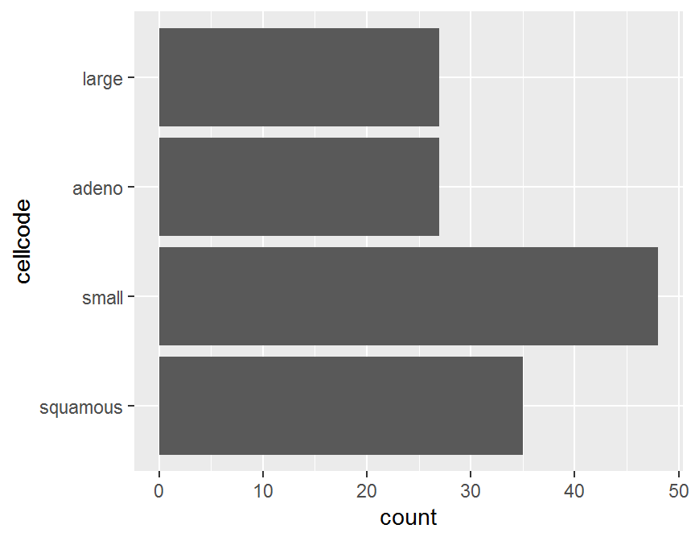
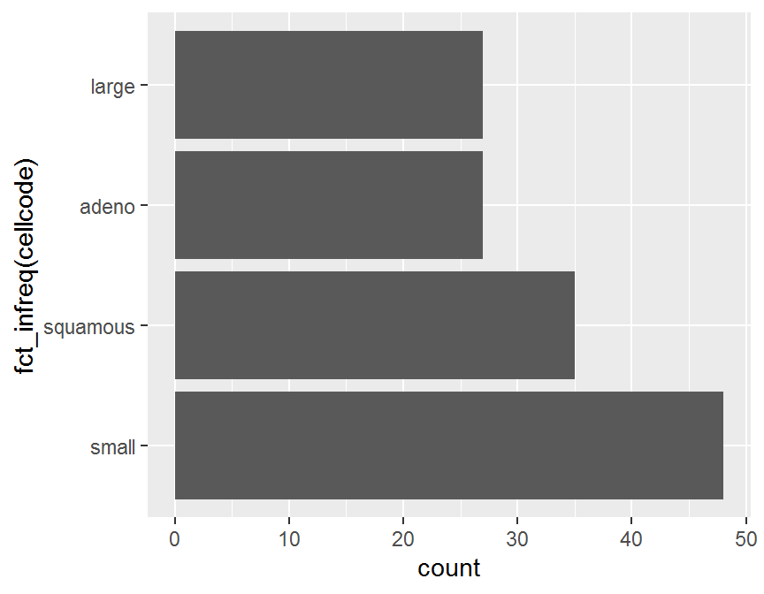
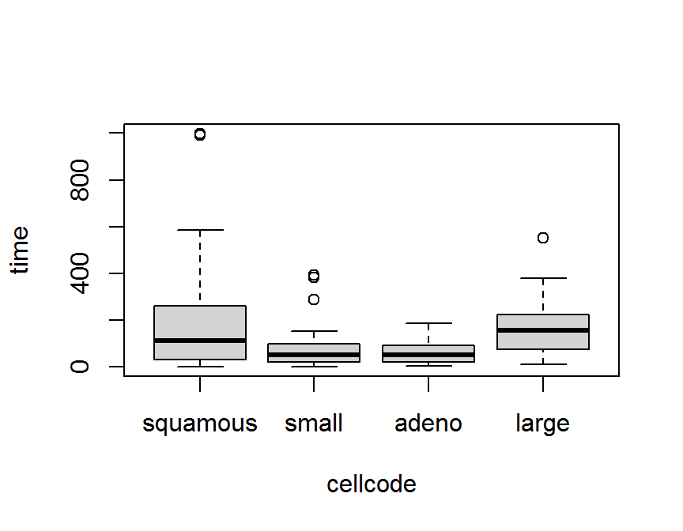
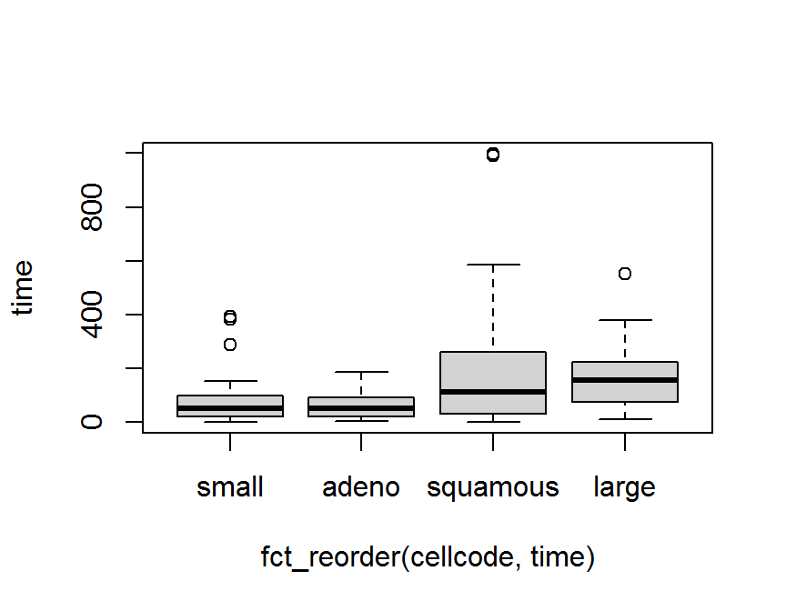
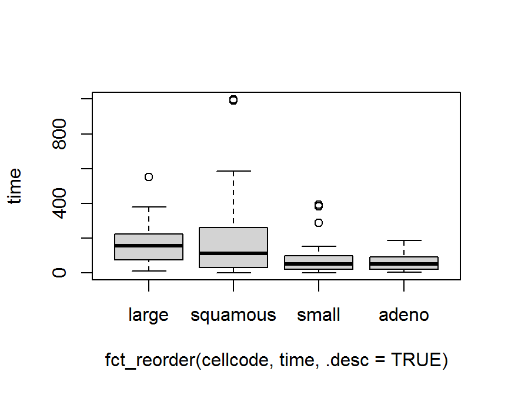

Chapter 11 因子資料處理
因子物件 (factor) 為處理 類別資料 (categorical data), 提供的一種有效的方法. 類別變數 將變數值分成互斥的類別水準, 在類別變數定義中的特定幾種類別水準是否有大小差距, 又可分類成 名目變數 (nominal variable) 與 有序變數 (ordinal variable), 或稱 名目尺度 與 順序尺度.
在 {R} 中特別使用
因子
(factor)
來表示.
因子是一種特殊的文字向量,
文字向量中的每一個元素, 取一個離散值,
因子物件有一個特殊屬性, 稱為
層次,
水平,
水準
或
類別水準
(levels),
表示這組所有可能的離散值.
因子常常是用文字或字串輸入,
有時會使用數值或整數代表,
一但變數設定為因素或因子向量,
{R} 在列印或輸出時,
並不會加上雙引號 ",
且數值或有大小順序的文字,
{R} 在統計分析上都必須特別處理.
在 {R} 中若要設定因子,
可以簡單地用函式
factor()
產生無序因子物件.
tidyverse 套件系統提供 forcats 套件,
主要用來處理因子變數與類別資料.
11.1 forcats 套件: 基本函式
forcats 套件的基本函式包含
fct_count(f, sort = FALSE, prop = FALSE): 計算類別水準數目.fct_unique(f): 呈現專一類別水準名稱.fct_c(f1, f2): 合併不同類別水準的 2 個因子物件.
library(dplyr)
library(ggplot2)
library(forcats)
library(kableExtra)
## Warning: package 'kableExtra' was built under R version 4.0.3
set.seed(100)
letters[1:5]
## [1] "a" "b" "c" "d" "e"
f <- factor(sample(letters[1:5])[rpois(100, 5)])
table(f)
## f
## a b c d e
## 21 2 3 21 15
fct_count(f)
## # A tibble: 6 x 2
## f n
## <fct> <int>
## 1 a 21
## 2 b 2
## 3 c 3
## 4 d 21
## 5 e 15
## 6 <NA> 38
fct_count(f, sort = TRUE)
## # A tibble: 6 x 2
## f n
## <fct> <int>
## 1 <NA> 38
## 2 a 21
## 3 d 21
## 4 e 15
## 5 c 3
## 6 b 2
fct_count(f, sort = TRUE, prop = TRUE)
## # A tibble: 6 x 3
## f n p
## <fct> <int> <dbl>
## 1 <NA> 38 0.38
## 2 a 21 0.21
## 3 d 21 0.21
## 4 e 15 0.15
## 5 c 3 0.03
## 6 b 2 0.02
##
f1 <- factor(letters[1:3])
f2 <- factor(letters[c(1, 2, 23)])
f1
## [1] a b c
## Levels: a b c
f2
## [1] a b w
## Levels: a b w
fct_c(f1, f2)
## [1] a b c a b w
## Levels: a b c w11.2 移除或增加部分類別水準
資料分析中常因抽樣 0 值, 而必須特別處理, 例如必須移除部分類別水準或是必須增加因子變數中的類別水準. 下列函式可以執行這些功能.
fct_drop(f, only) # R baes base::droplevels()
fct_expand(f, ...)
fct_explicit_na(f, na_level = "(Missing)")函式 fct_drop() 可以移除部分類別水準,
函式 fct_expand() 可以增加因子變數中的類別水準.
函式 fct_explicit_na 可以明確設性缺失值為 1 項類別水準.
f <- factor(c("F", "M"), levels = c("F", "M", "Other"))
f
## [1] F M
## Levels: F M Other
fct_drop(f)
## [1] F M
## Levels: F M
# Set only to restrict which levels to drop
fct_drop(f, only = "F")
## [1] F M
## Levels: F M Other
fct_drop(f, only = "Other")
## [1] F M
## Levels: F M
##
fct_expand(f, "B", "T")
## [1] F M
## Levels: F M Other B T
##
f <- factor(c("F", "M", "M", "F", "F", "B", "T", NA, NA))
f
## [1] F M M F F B T <NA> <NA>
## Levels: B F M T
fct_explicit_na(f)
## [1] F M M F F B T (Missing)
## [9] (Missing)
## Levels: B F M T (Missing)
fct_explicit_na(f, na_level = "Other")
## [1] F M M F F B T Other Other
## Levels: B F M T Other11.3 改變類別水準函式
因子變數中的類別水準的名稱呈現, 常常視需求而更改,
例如, H 改成 High, F 改成 female 等等.
函式 fct_recode() 可以改變的名稱呈現.
x <- factor(c("apple", "bear", "banana", "dear"))
x
## [1] apple bear banana dear
## Levels: apple banana bear dear
fct_recode(x, fruit = "apple", fruit = "banana")
## [1] fruit bear fruit dear
## Levels: fruit bear dear
# If you name the level NULL it will be removed
fct_recode(x, NULL = "apple", fruit = "banana")
## [1] <NA> bear fruit dear
## Levels: fruit bear dear
# When passing a named vector to rename levels use !!! to splice
x <- factor(c("apple", "bear", "banana", "dear"))
levels <- c(fruit = "apple", fruit = "banana")
fct_recode(x, !!!levels)
## [1] fruit bear fruit dear
## Levels: fruit bear dear
##
x <- factor(c("F", "M", "M", "F", "F", "B", "T"))
x
## [1] F M M F F B T
## Levels: B F M T
fct_recode(x, Male = "M", Female = "F", Other = "B", Other = "T")
## [1] Female Male Male Female Female Other Other
## Levels: Other Female Male函式 fct_collapse() 可以改變的名稱呈現,
將不同類別水準合併且更名.
##
x <- factor(c("F", "M", "M", "F", "F", "B", "T"))
x
## [1] F M M F F B T
## Levels: B F M T
fct_collapse(x, Biological = c("M", "F"),
Other = "B", Other = "T")
## [1] Biological Biological Biological Biological Biological Other Other
## Levels: Other Biological函式 fct_other() 可將部分類別水準合併或移除.
fct_other(f, keep, drop, other_level = "Other")` 其中引數 keep, drop 保留或移除部分原有類別水準,
將其餘類別水準合併成 other_level.
x <- factor(rep(LETTERS[1:4], times = 3))
x
## [1] A B C D A B C D A B C D
## Levels: A B C D
fct_other(x, keep = c("A", "B"))
## [1] A B Other Other A B Other Other A B Other Other
## Levels: A B Other
fct_other(x, drop = c("A", "B"), other_level = "change")
## [1] change change C D change change C D change change C D
## Levels: C D change11.4 改變或合併類別水準函式 fct_lump()
因子變數中的類別水準常常因頻率過低影響分析與推論,
常常常須要合併類別水準.
系列函式 fct_lump() 可將部分類別水準合併.
fct_lump_min(): 合併類別水準頻率計數低於設定的最小值.
- `fct_lump_prop(): 合併類別水準相對頻率低於設定的最小值
fct_lump_n(): 合併類別水準最多 n 種主要類別.fct_lump_lowfreq(): 合併類別水準, 且確保other類別的頻率仍是最低. 函式使用程式語言結構為
fct_lump(f, n, prop, w = NULL, other_level = "Other",
ties.method = c("min", "average", "first", "last", "random", "max"))
fct_lump_min(f, min, w = NULL, other_level = "Other")
fct_lump_prop(f, prop, w = NULL, other_level = "Other")
fct_lump_n(f, n, w = NULL, other_level = "Other",
ties.method = c("min", "average", "first", "last", "random", "max"))
fct_lump_lowfreq(f, other_level = "Other")其中引數 f 為因子向量,
n 設定最多 n 種主要類別,
prop 設定正值百分率, 合併小於 prop 的類別,
設定負值百分率, 合併大於 prop 的類別.
w 設定權重.
other_level 設定合併後的類別名稱.
ties.method 處理相同排序方式.
min 保留至少出現 min 次類別.
x <- factor(rep(LETTERS[1:9], times = c(40, 10, 5, 27, 1, 1, 1, 1, 1)))
x %>% table()
## .
## A B C D E F G H I
## 40 10 5 27 1 1 1 1 1
x %>% fct_lump_n(3) %>% table()
## .
## A B D Other
## 40 10 27 10
x %>% fct_lump_prop(0.10) %>% table()
## .
## A B D Other
## 40 10 27 10
x %>% fct_lump_min(5) %>% table()
## .
## A B C D Other
## 40 10 5 27 5
x %>% fct_lump_lowfreq() %>% table()
## .
## A D Other
## 40 27 20
##
set.seed(123)
x <- factor(letters[rpois(50, 5)])
x
## [1] d g d h i b e h e e i e f e b h c b d i h f f k f f e e d c i h f g a e f c d c c d
## [43] d d c c c e d g
## Levels: a b c d e f g h i k
table(x)
## x
## a b c d e f g h i k
## 1 3 8 9 9 7 3 5 4 1
table(fct_lump_lowfreq(x))
##
## b c d e f g h i Other
## 3 8 9 9 7 3 5 4 2
## Use positive values to collapse the rarest
fct_lump_n(x, n = 3)
## [1] d Other d Other Other Other e Other e e Other e Other e
## [15] Other Other c Other d Other Other Other Other Other Other Other e e
## [29] d c Other Other Other Other Other e Other c d c c d
## [43] d d c c c e d Other
## Levels: c d e Other
fct_lump_prop(x, prop = 0.1)
## [1] d Other d Other Other Other e Other e e Other e f e
## [15] Other Other c Other d Other Other f f Other f f e e
## [29] d c Other Other f Other Other e f c d c c d
## [43] d d c c c e d Other
## Levels: c d e f Other
## Use negative values to collapse the most common
fct_lump_n(x, n = -3)
## [1] Other g Other Other Other b Other Other Other Other Other Other Other Other
## [15] b Other Other b Other Other Other Other Other k Other Other Other Other
## [29] Other Other Other Other Other g a Other Other Other Other Other Other Other
## [43] Other Other Other Other Other Other Other g
## Levels: a b g k Other
fct_lump_prop(x, prop = -0.1)
## [1] Other g Other h i b Other h Other Other i Other Other Other
## [15] b h Other b Other i h Other Other k Other Other Other Other
## [29] Other Other i h Other g a Other Other Other Other Other Other Other
## [43] Other Other Other Other Other Other Other g
## Levels: a b g h i k Other
## Use weighted frequencies
w <- c(rep(2, 25), rep(1, 25))
fct_lump_n(x, n = 5, w = w)
## [1] d Other d h Other Other e h e e Other e f e
## [15] Other h c Other d Other h f f Other f f e e
## [29] d c Other h f Other Other e f c d c c d
## [43] d d c c c e d Other
## Levels: c d e f h Other
fct_lump_n(x, n = 6)
## [1] d Other d h i Other e h e e i e f e
## [15] Other h c Other d i h f f Other f f e e
## [29] d c i h f Other Other e f c d c c d
## [43] d d c c c e d Other
## Levels: c d e f h i Other
fct_lump_n(x, n = 6, ties.method = "max")
## [1] d Other d h i Other e h e e i e f e
## [15] Other h c Other d i h f f Other f f e e
## [29] d c i h f Other Other e f c d c c d
## [43] d d c c c e d Other
## Levels: c d e f h i Other
## Use fct_lump_min() to lump together all levels with fewer than `n` values
table(fct_lump_min(x, min = 10))
##
## Other
## 50以第 5 章中 退伍軍人肺癌臨床試驗 資料 (survVATrial.csv) 為例,
細胞型態 cellcode 有 4 種類別.
將類別水準合併成 2 種主要類別, 其餘類別合併.
dd <- read.table("./Data/survVATrial.csv",
header = TRUE,
sep = ",",
quote = "\"'",
dec = ".",
row.names = NULL,
# col.names,
as.is = TRUE,
# as.is = !stringsAsFactors,
na.strings = c(".", "NA"))
head(dd)
## treat cellcode time censor diagtime kps age prior
## 1 0 1 72 1 60 7 69 0
## 2 0 1 411 1 70 5 64 10
## 3 0 1 228 1 60 3 38 0
## 4 0 1 126 1 60 9 63 10
## 5 0 1 118 1 70 11 65 10
## 6 0 1 10 1 20 5 49 0
str(dd)
## 'data.frame': 137 obs. of 8 variables:
## $ treat : int 0 0 0 0 0 0 0 0 0 0 ...
## $ cellcode: int 1 1 1 1 1 1 1 1 1 1 ...
## $ time : int 72 411 228 126 118 10 82 110 314 100 ...
## $ censor : int 1 1 1 1 1 1 1 1 1 0 ...
## $ diagtime: int 60 70 60 60 70 20 40 80 50 70 ...
## $ kps : int 7 5 3 9 11 5 10 29 18 6 ...
## $ age : int 69 64 38 63 65 49 69 68 43 70 ...
## $ prior : int 0 10 0 10 10 0 10 0 0 0 ...
dd$treat <- factor(dd$treat, labels = c("placebo", "test"))
dd$cellcode <- factor(dd$cellcode,
labels = c("squamous", "small", "adeno", "large"))
dd$censor <- factor(dd$censor, labels = c("survival", "dead"))
dd$prior <- factor(dd$prior, labels = c("no", "yes"))
head(dd)
## treat cellcode time censor diagtime kps age prior
## 1 placebo squamous 72 dead 60 7 69 no
## 2 placebo squamous 411 dead 70 5 64 yes
## 3 placebo squamous 228 dead 60 3 38 no
## 4 placebo squamous 126 dead 60 9 63 yes
## 5 placebo squamous 118 dead 70 11 65 yes
## 6 placebo squamous 10 dead 20 5 49 no
str(dd)
## 'data.frame': 137 obs. of 8 variables:
## $ treat : Factor w/ 2 levels "placebo","test": 1 1 1 1 1 1 1 1 1 1 ...
## $ cellcode: Factor w/ 4 levels "squamous","small",..: 1 1 1 1 1 1 1 1 1 1 ...
## $ time : int 72 411 228 126 118 10 82 110 314 100 ...
## $ censor : Factor w/ 2 levels "survival","dead": 2 2 2 2 2 2 2 2 2 1 ...
## $ diagtime: int 60 70 60 60 70 20 40 80 50 70 ...
## $ kps : int 7 5 3 9 11 5 10 29 18 6 ...
## $ age : int 69 64 38 63 65 49 69 68 43 70 ...
## $ prior : Factor w/ 2 levels "no","yes": 1 2 1 2 2 1 2 1 1 1 ...
##
dd %>% select(cellcode) %>% table()
## .
## squamous small adeno large
## 35 48 27 27
dd %>% select(cellcode) %>%
mutate(cellcode = fct_lump(cellcode, n = 1)) %>%
table()
## .
## small Other
## 48 8911.5 類別水準的頻率排序函式 fct_infreq()
函式系列 fct_infreq() 可將類別水準的頻率排序記錄.
fct_inorder(): 依照類別水準出現的次序排序.
fct_infreq(): 依照類別水準的頻率排序 (由多到少).
fct_inseq(): 依照類別水準的儲存數值排序.
f <- factor(c("b", "b", "a", "c", "c", "c"))
f
## [1] b b a c c c
## Levels: a b c
fct_inorder(f)
## [1] b b a c c c
## Levels: b a c
fct_infreq(f)
## [1] b b a c c c
## Levels: c b a
##
f <- factor(1:3, levels = c("3", "2", "1"))
f
## [1] 1 2 3
## Levels: 3 2 1
#> Levels: 3 2 1
fct_inseq(f)
## [1] 1 2 3
## Levels: 1 2 3以第 5 章中 退伍軍人肺癌臨床試驗 資料 (survVATrial.csv) 為例,
細胞型態 cellcode 有 4 種類別.
dd %>% select(cellcode) %>% table()
## .
## squamous small adeno large
## 35 48 27 27
## fct_inorder()
dd %>% select(cellcode) %>%
mutate(cellcode = fct_inorder(cellcode)) %>%
table()
## .
## squamous small adeno large
## 35 48 27 27
## fct_infreq()
dd %>% select(cellcode) %>%
mutate(cellcode = fct_infreq(cellcode)) %>%
table()
## .
## small squamous adeno large
## 48 35 27 27
## fct_inseq()
dd %>% select(cellcode) %>%
mutate(cellcode = fct_inseq(factor(as.numeric(cellcode)))) %>% table()
## .
## 1 2 3 4
## 35 48 27 27以第 5 章中 退伍軍人肺癌臨床試驗 資料 (survVATrial.csv) 為例,
細胞型態 cellcode 有 4 種類別.
首先繪製長條圖.
## barplot
ggplot(dd, aes(x = cellcode)) +
geom_bar() +
coord_flip()
圖中的類別出現並非照類別水準的頻率順序,
函式 fct_infreq() 可將類別水準的頻率排序記錄.
ggplot(dd, aes(x = fct_infreq(cellcode))) +
geom_bar() +
coord_flip()
11.6 依照其他變數將類別重新排序函式 fct_reorder()
因子變數中的類別水準常常因其他變數而須將類別重新排序.
fct_rev(f): 將反轉原有類別出現的排列順序.fct_shuffle(f, n = 1L): 將原有類別出現的排列順序隨機變更.fct_reorder(.f, .x, .fun = median, ..., .desc = FALSE)fct_reorder2(.f, .x, .y, .fun = last2, ..., .desc = TRUE)first2(.x, .y)last2(.x, .y)
fct_reorder() 將因子 f 類別出現的排列順序依照其他變數更動,
fct_reorder2() 保留因子 f 原有類別出現的排列順序.
當 y 變數依照 x 變數排序, 函式 first2(.x, .y) 與 last2(.x, .y)
可尋找 y 變數的最前與最後的 2 個數值.
其中引數
.f: 為主要因子變數..x, .y: 為其他變數..fun: 為摘要函式..desc = FALSE由小到大排序.
f <- factor(c("a", "b", "c"))
fct_rev(f)
## [1] a b c
## Levels: c b a
fct_shuffle(f)
## [1] a b c
## Levels: a c b
fct_shuffle(f)
## [1] a b c
## Levels: c b a
##
df <- tibble::tribble(
~color, ~a, ~b,
"blue", 1, 2,
"green", 6, 2,
"purple", 3, 3,
"red", 2, 3,
"yellow", 5, 1
)
df$color <- factor(df$color)
##
fct_reorder(df$color, df$a, min)
## [1] blue green purple red yellow
## Levels: blue red purple yellow green
fct_reorder2(df$color, df$a, df$b)
## [1] blue green purple red yellow
## Levels: purple red blue green yellow以第 5 章中 退伍軍人肺癌臨床試驗 資料 (survVATrial.csv) 為例,
細胞型態 cellcode 有 4 種類別.
boxplot(time ~ cellcode, data = dd)
boxplot(time ~ fct_reorder(cellcode, time), data = dd)
boxplot(time ~ fct_reorder(cellcode, time, .desc = TRUE), data = dd)